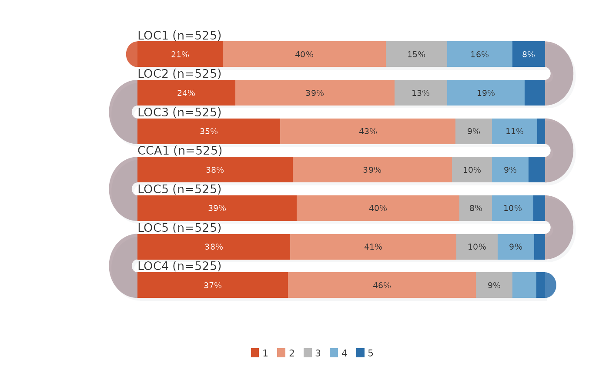

Each survey item is a 100\ Color segments represent response levels; percentages are shown inside segments when wide enough. Arcs blend adjacent end-colors.
Usage
survey_sequence(
counts,
labels = NULL,
levels = NULL,
band_height = 28,
band_gap = 14,
plot_width = 500,
colors = NULL,
show_percent = TRUE,
min_segment = 34,
arc_style = c("gradient", "neutral"),
arc_opacity = 0.5,
sort_by = c("none", "mean", "net"),
shadow = TRUE,
show_legend = TRUE,
label_color = "#333333",
label_size = 0.85,
label_align = "left",
reverse_rtl = FALSE,
start_from = c("left", "right"),
flow = c("snake", "natural"),
title = NULL,
margin = c(top = 30, right = 10, bottom = 55, left = 100),
background = "white"
)Arguments
- counts
Numeric matrix of response counts (rows=items, cols=levels).
- labels
Character vector of item labels.
- levels
Character vector of level labels.
- band_height
Numeric (default 28).
- band_gap
Numeric (default 14).
- plot_width
Numeric (default 500).
- colors
Character vector of segment colors. Default: diverging palette.
- show_percent
Logical. Show percentages inside segments (default TRUE).
- min_segment
Numeric. Hide label if segment narrower than this (default 34).
- arc_style
Character: "gradient" or "neutral" (default "gradient").
- arc_opacity
Numeric 0-1 (default 0.5).
- sort_by
Character: "none", "mean", "net" (default "none").
- shadow
Logical (default TRUE).
- show_legend
Logical (default TRUE).
- label_color
Character (default "#333333").
- label_size
Numeric (default 0.85).
- label_align
Character. Label alignment: "left" (default), "right", or "direction" (follows band reading direction).
- reverse_rtl
Logical. Reverse segment order on right-to-left bands so the visual reading direction mirrors the data order (default FALSE).
- start_from
Character: "left" (default) or "right". Which side the first band starts from.
- flow
Character,
"snake"(default) or"natural"."snake"uses alternating boustrophedon direction;"natural"reads all bands in the same direction.- title
Optional title.
- margin
Named numeric vector.
- background
Background color.
Examples
counts <- matrix(c(
110, 210, 79, 84, 42,
126, 205, 68, 100, 26,
184, 226, 47, 58, 10,
200, 205, 52, 47, 21,
205, 210, 42, 53, 15,
197, 214, 53, 47, 14,
194, 242, 47, 31, 11
), nrow = 7, byrow = TRUE)
labels <- c("LOC1", "LOC2", "LOC3", "CCA1", "LOC5", "LOC5", "LOC4")
labels <- paste0(labels, " (n=525)")
levs <- as.character(1:5)
survey_sequence(counts, labels, levs)
